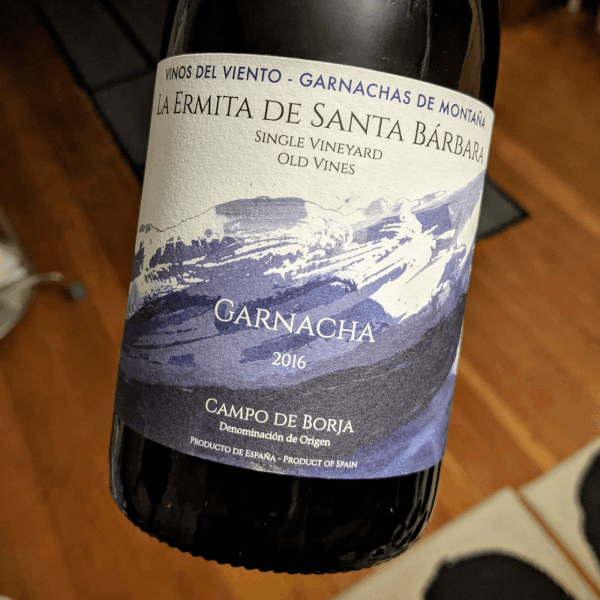

Another Great Value in Garnacha
Latest Blog Post
David MetcalfMy latest exciting find in garnacha comes not from central Spain's Sierra de Gredos, but from old vines in historic Aragón. The DO is Campo de Borja (bor-ha), in the capital subregion of Zaragoza. This appellation is the transition zone from the plains of the Ebro river to the peaks of the Sistema Iberíco mountains. The Moncayo is perhaps its best known geographic feature; a chain of three dramatic snowcapped peaks looming above the foothills. This is the stage for some excellent old vine garnacha.
Vinos del Viento "La Ermita de Santa Bárbara" Single Vineyard Old Vines Garnacha
Vinos del Viento is a small production project of winemaker Michael Cooper, a California native and long time resident of Aragón. The entire lineup offers great quality for the price, with this bottling, La Ermita de Santa Bárbara, leading the way. I enjoyed a bottle of the 2016 vintage, available online for less than $20USD. Black cherry and fresh mission fig provide the backdrop for a mineral and spice laden affair. Slate, five spice, white pepper, dianthus and jerky abound. Notably soft tannins with enough bright acidity to stand up to rich food. Drinking great now, but will age for at least five more years.